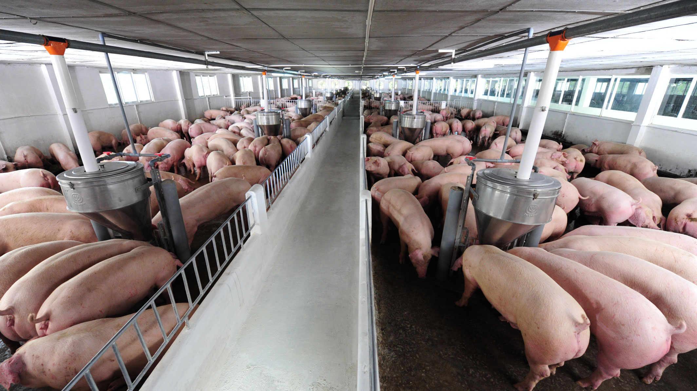

Lợn giống
Các giống lợn của CPV có nguồn gen từ các các đàn giống cao sản của thế giới, được nhập khẩu, nuôi thích nghi và chọn lọc trong điều kiện Việt Nam. Giống lợn CPV là sự kết hợp hài hòa các tính trạng có giá trị kinh tế, mang lại lợi nhuận cao cho người chăn nuôi CPV đang cung cấp lợn cái hậu bị, lợn đực cuối và lợn con nuôi thịt.